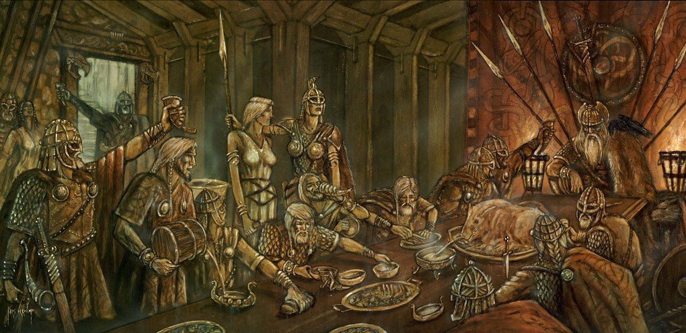

Valhalla, en la mitología nórdica, es un majestuoso salón ubicado en Asgard, el reino de los dioses. Es el lugar donde los guerreros caídos en batalla son llevados por las valquirias para disfrutar de una existencia eterna y gloriosa.
Valhalla es descrito como un lugar de belleza incomparable, con techos dorados, salones llenos de banquetes interminables y campos de batalla donde los guerreros practican sus habilidades día y noche.
Los guerreros dignos de Valhalla son seleccionados por las valquirias, doncellas guerreras que sirven a Odin, el dios principal de la mitología nórdica. Se dice que las valquirias eligen a los guerreros caídos en combate y los llevan al salón de Valhalla.
En Valhalla, los guerreros disfrutan de una vida gloriosa y festiva. Participan en banquetes interminables, se entrenan en campos de batalla sin fin y se preparan para luchar junto a los dioses en la batalla final, conocida como el Ragnarök.
Según la mitología nórdica, el Ragnarök es la batalla final entre los dioses y las fuerzas del caos, donde el mundo será destruido y luego renacerá. Los guerreros de Valhalla están destinados a luchar junto a los dioses en esta batalla épica, enfrentándose a criaturas monstruosas y a los enemigos de Asgard.
Para los guerreros nórdicos, ser elegido para entrar a Valhalla es el mayor honor y una garantía de una vida después de la muerte llena de gloria y aventura. La batalla y la victoria son celebradas con festines, canciones y la compañía de los dioses.
